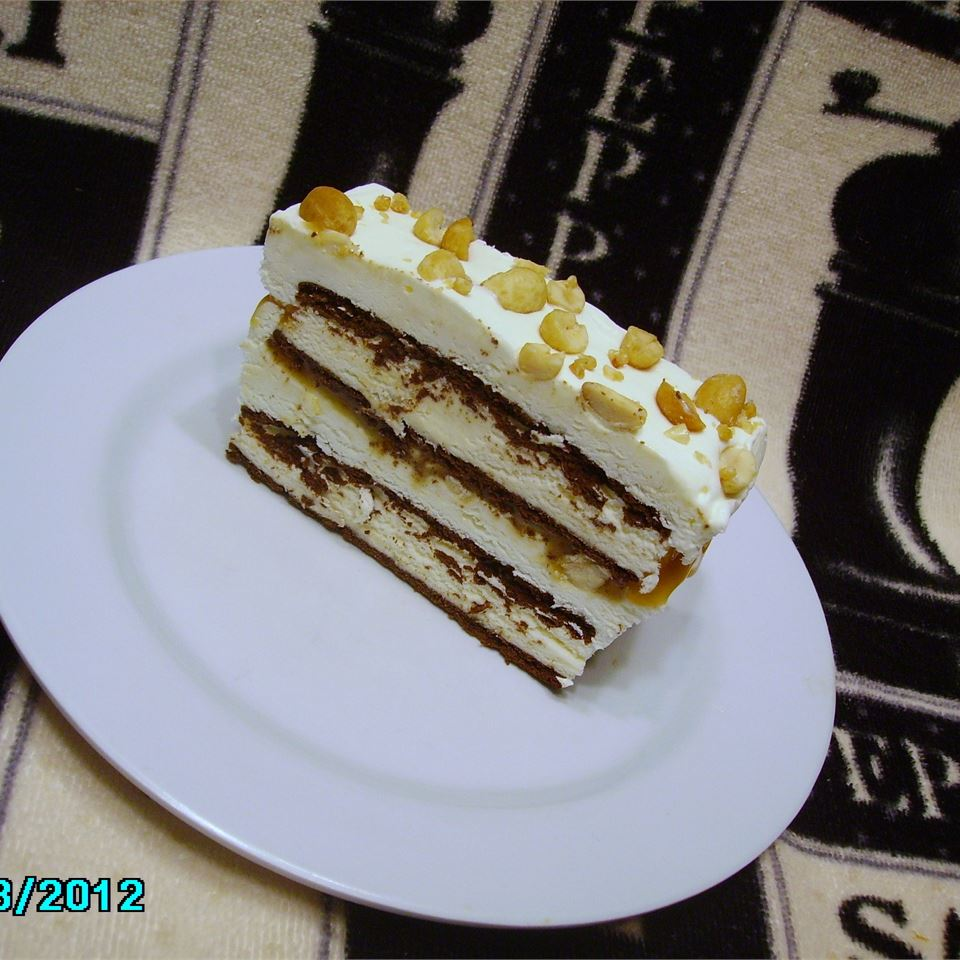

Ice Cream Sandwich Dessert

Description:
No one will believe this awesome dessert is just dressed-up ice cream sandwiches!
Ingredients
- 22 ice cream sandwiches
- 1 (16 ounce) container frozen whipped topping, thawed
- 1 (12 ounce) jar caramel ice cream topping
- 1 ½ cups salted peanuts
Steps
- Cut one ice cream sandwich in half. Place one whole and one half sandwich along a short side of a high-sided 9x13-inch casserole dish. Repeat until bottom is covered, alternating the whole and half sandwiches. Spread with half of the whipped topping. Pour caramel on top. Sprinkle with half of the peanuts. Repeat layers with remaining ice cream sandwiches, whipped topping, and peanuts. The pan will be full. Cover and freeze for up to 2 months. Remove from freezer 20 minutes before serving. Cut into squares.
go back